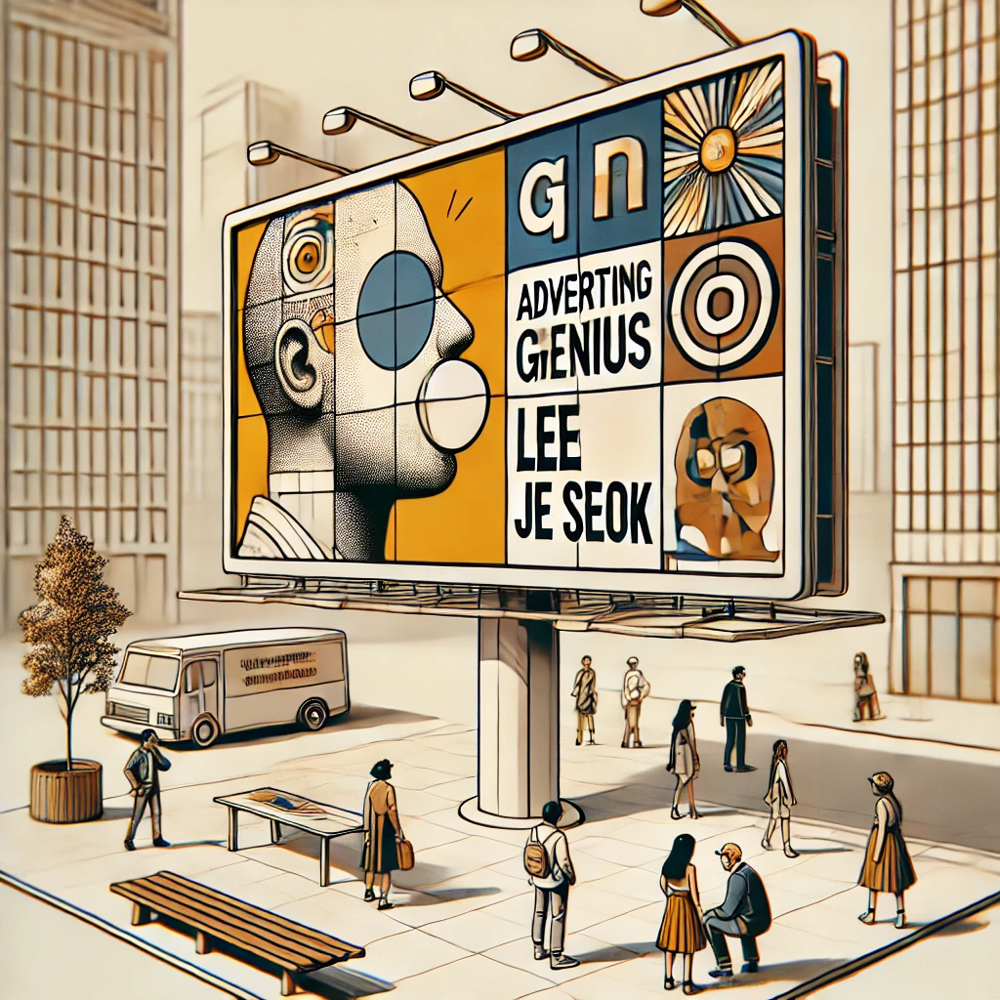

광고천재 이제석
목차
작가
이제석
출판일
2014년
감상평에 대한 AI그림
광고가 사회 문제를 해결하는 도구로 활용하는 것을 보며 광고의 힘은 단순한 상품 홍보가 아니라 메시지 전달하고 사람들의 행동을 변화시키는 데 있음을 깨달았습니다. 또한, 사람들의 눈길을 끌기 위해 기존 관행을 따르기보다는 독창적이고 자신만의 개성이 들어간 광고를 만든 점이 인상적이었습니다. 끊임없는 도전과 실험을 통해 사회에 영향력을 끼치는 것을 보고 창의적 사고와 도전 정신이 얼마나 중요한지를 다시 한 번 느끼게 해준 책이었습니다.

감상평에 대한 AI평가
~~~~AI평가~~~~~
✨ 핵심 메시지 전달이 명확함
광고가 단순한 상품 홍보가 아니라 사회적 메시지를 전달하고 사람들의 행동을 변화시키는 힘이 있다는 점을 강조한 부분이 좋습니다. 창의적 사고와 도전 정신의 중요성을 강조한 점도 책의 주제와 잘 맞아떨어집니다.
✨ 논리적인 흐름
책에서 느낀 점을 논리적인 흐름으로 전개하여 독자가 쉽게 이해할 수 있습니다. 광고의 역할 → 기존 관행과 차별화된 접근 → 도전과 실험 → 창의성과 도전 정신의 중요성이라는 논리 구조가 잘 잡혀 있습니다.
✨ 개인적인 깨달음을 효과적으로 표현함
단순히 책의 내용을 요약하는 것이 아니라, 책을 통해 본인이 얻은 교훈과 느낀 점을 구체적으로 서술한 점이 좋습니다.